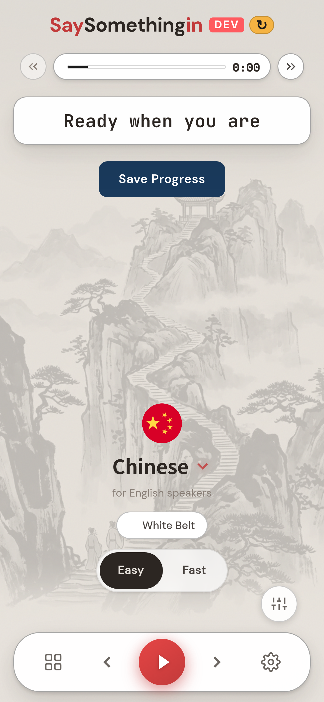
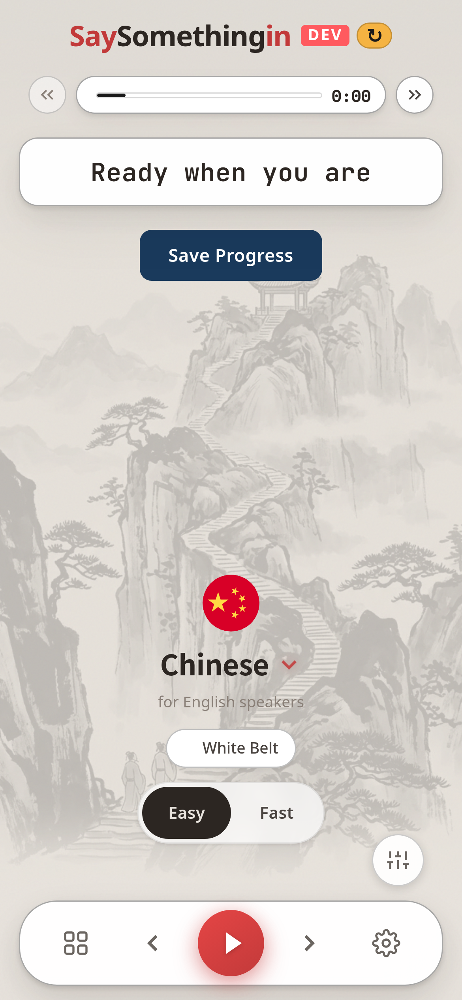
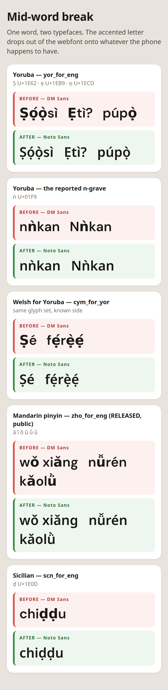
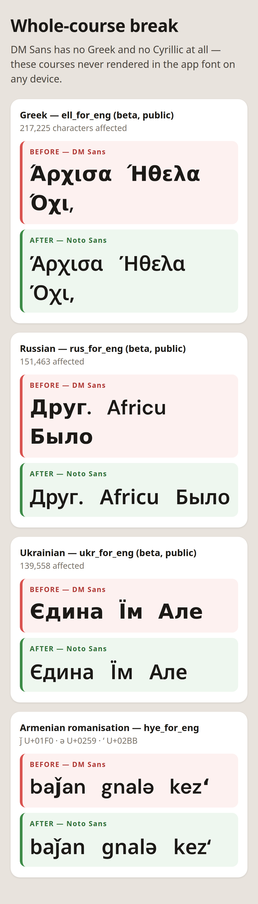

The same screen, same phone, same moment. Tap the buttons (or tap the picture) to flip between them in place — the difference, if there is one, will show up as a flicker.


The buttons stay with you as you scroll — you can also just tap the picture
These are the letters that were breaking. On the left of each pair is what learners were getting; underneath it is what they get now. The Chinese one is on a course that is live and public today.

Same again, for the two alphabets that were missing wholesale.

Seven languages were affected. Nothing here is a live change to what learners see until you've said the look is fine.